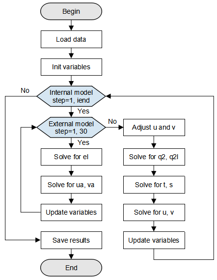

Implementing Regional Ocean Model GOMO¶
GPU High Performance Computing Whole Process

Overview¶
Generalized Operator Modelling of the Ocean (GOMO) is a 3D regional ocean model based on OpenArray. It is a universal model developed by Huang Xiaomeng from Tsinghua University for ocean modeling and parallel computing (Xiaomeng Huang et al, 2019). The basic equations and algorithms in the GOMO model are derived from the POM2k model (Blumberg and Mellor, 1987). The 3D ocean model plays an important role in the earth system modeling. Following the law of conservation of mass, the model simulates phenomena such as ocean currents and whirlpools to display the distribution of sea surface temperature and sea surface height and predict typhoons, tsunami and other phenomena in real time. Traditional ocean models have complex code implementation and run on CPUs. However, the GOMO model has its framework accelerated by MindSpore and runs on a GPU, which greatly improves the model performance.
The following describes how to use MindSpore to build and run the 3D ocean model GOMO on GPU.
Download address of the complete sample code: https://gitee.com/mindspore/models/tree/r1.5/research/hpc/ocean_model.
The directory structure of the sample code is as follows:
└── ocean_model
├── README.md # descriptions about ocean model GOMO
├── scripts
│ ├── run_distribute_train.sh # launch distributed training for GPU
├──src
│ ├── GOMO.py # GOMO model
│ ├── Grid.py # grid initial
│ ├── stencil.py # averaging and differential stencil oprator
│ ├── op_operator.py # averaging and differential kernel operator
│ ├── read_var.py # read variables from nc file
├── train.py # train script
The overall execution process is as follows:
Prepare a seamount file as the ocean simulation dataset, and load and process the data.
Define GOMO variable initialization.
Define the GOMO model.
Load the dataset and perform training. After the training is complete, view the result and save the file.
Preparations¶
Installing Software Dependencies¶
Install MindSpore.
Before the practice, ensure that MindSpore has been properly installed. If not, install MindSpore by following the Installation Guide.
Install netCDF4.
pip install netCDF4
Preparing Data¶
Prepare a seamount file in netCDF format. The seamount problem proposed by Beckmann and Haidvogel is a widely used ideal test case for regional ocean models (Beckmann and Haidvogel, 1993). Download the seamount file.
Loading Data¶
Load the seamount data file and read the initial variable values from the file script. The data type in the seamount file is float64, which needs to be converted into float32 for MindSpore computation. The script for loading and processing data is in the src/read_var.py script of the source code.
import numpy as np
import netCDF4 as nc
# variable name list
params_name = ['z', 'zz', 'dz', 'dzz', 'dx', 'dy', 'cor', 'h', 'fsm', 'dum', 'dvm', 'art', 'aru', 'arv', 'rfe', 'rfw',
'rfn', 'rfs', 'east_e', 'north_e', 'east_c', 'north_c', 'east_u', 'north_u', 'east_v', 'north_v', 'tb',
'sb', 'tclim', 'sclim', 'rot', 'vfluxf', 'wusurf', 'wvsurf', 'e_atmos', 'ub', 'vb', 'uab', 'vab', 'elb',
'etb', 'dt', 'uabw', 'uabe', 'vabs', 'vabn', 'els', 'eln', 'ele', 'elw', 'ssurf', 'tsurf', 'tbe', 'sbe',
'sbw', 'tbw', 'tbn', 'tbs', 'sbn', 'sbs', 'wtsurf', 'swrad']
def load_var(file_obj, name):
"""load variable from nc data file"""
data = file_obj.variables[name]
data = data[:]
data = np.float32(np.transpose(data, (2, 1, 0)))
return data
def read_nc(file_path):
""" put the load variable into the dict """
variable = {}
file_obj = nc.Dataset(file_path)
for name in params_name:
variable[name] = load_var(file_obj, name)
return variable
Defining GOMO Grid¶
A GOMO model deduces differential equations and boundary conditions based on momentum, energy, and law of conservation of mass, and determines seven equations to be solved. For details about formula derivation, see this paper. Figure 1 shows an overall GOMO execution flowchart.
First, data is loaded from the seamount data for initializing model variables. After the initial value and model parameters are loaded, the computation is divided into two parts: internal mode and external mode. In external mode, the 2D sea surface elevation el and column-averaged velocity (ua, va) are mainly computed. In internal mode, the number of loops iend indicates the total number of time steps during training (set by users). The 3D array computations predominate in order to compute the turbulence kinetic energy q2 and the turbulence length q2l that generates the turbulence kinetic energy, temperature t and salinity s, as well as the velocity fields u and v in the x and y directions. After the computation is complete, save the required variable result and end the training.

Figure 1: GOMO model flowchart
Initializing Variables¶
...
from src.GOMO import GOMO_init
...
if __name__ == "__main__":
...
# define grid and init variable update
net_init = GOMO_init(im, jm, kb, stencil_width)
...
Defining GOMO Model¶
def construct(self, etf, ua, uab, va, vab, el, elb, d, u, v, w, kq, km, kh, q2, q2l, tb, t, sb, s,
rho, wubot, wvbot, ub, vb, egb, etb, dt, dhb, utb, vtb, vfluxb, et):
"""construct"""
x_d, y_d, z_d = self.x_d, self.y_d, self.z_d
q2b, q2lb = self.q2b, self.q2lb
dx, dy = self.dx, self.dy
# surface forcing
w = w * (1 - self.z_h) + self.z_h * self.vfluxf
# lateral_viscosity
advx, advy, drhox, drhoy, aam = self.lateral_viscosity(dx, dy, u, v, dt, self.aam, ub, vb, x_d, y_d, z_d, rho, self.rmean)
# mode_interaction
adx2d, ady2d, drx2d, dry2d, aam2d, advua, advva, egf, utf, vtf = self.mode_interaction(advx, advy, drhox, drhoy, aam, x_d, y_d, d, uab, vab, ua, va, el)
# ===========external model===========
vamax = 0
elf = 0
for iext in range(1, 31):
# external_el
elf = self.external_el(x_d, y_d, d, ua, va, elb)
# external_ua
advua, uaf = self.external_ua(iext, x_d, y_d, elf, d, ua, va, uab, vab, el, elb, advua, aam2d, adx2d, drx2d, wubot)
# external_va
advva, vaf = self.external_va(iext, x_d, y_d, elf, d, ua, va, uab, vab, el, elb, advva, aam2d, ady2d, dry2d, wvbot)
# external_update
etf, uab, ua, vab, va, elb, el, d, egf, utf, vtf, vamax = self.external_update(iext, etf, ua, uab, va, vab, el, elb, elf, uaf, vaf, egf, utf, vtf, d)
# ===========internal model===========
if self.global_step != 0:
# adjust_uv
u, v = self.adjust_uv(u, v, utb, vtb, utf, vtf, dt)
# internal_w
w = self.internal_w(x_d, y_d, dt, u, v, etf, etb, vfluxb)
# internal_q
dhf, a, c, gg, ee, kq, km, kh, q2b_, q2, q2lb_, q2l = self.internal_q(x_d, y_d, z_d, etf, aam, q2b, q2lb, q2, q2l, kq, km, kh, u, v, w, dt, dhb, rho, wubot, wvbot, t, s)
q2b = ops.Assign()(self.q2b, q2b_)
q2lb = ops.Assign()(self.q2lb, q2lb_)
# internal_t_t
a, c, ee, gg, tb, t = self.internal_t_(t, tb, self.wtsurf, self.tsurf, self.swrad, self.tclim, self.tbe, self.tbw, self.tbn, self.tbs, x_d, y_d, z_d, dt, u, aam, self.h, self.dum, v, self.dvm, w, dhf, etf, a, kh, self.dzz, c, self.dzz1, ee, gg, dx, self.dz, dy, self.fsm, dhb)
# internal_t_s
a, c, ee, gg, sb, s = self.internal_t_(s, sb, self.wssurf, self.ssurf, self.swrad0, self.sclim, self.sbe, self.sbw, self.sbn, self.sbs, x_d, y_d, z_d, dt, u, aam, self.h, self.dum, v, self.dvm, w, dhf, etf, a, kh, self.dzz, c, self.dzz1, ee, gg, dx, self.dz, dy, self.fsm, dhb)
# dense
rho = self.dens(s, t, self.zz, self.h, self.fsm)
# internal_u
uf, a, c, gg, ee, wubot = self.internal_u(x_d, z_d, dhf, u, v, w, ub, vb, egf, egb, ee, gg, self.cbc, km, advx, drhox, dt, dhb)
# internal_v
vf, a, c, gg, ee, wvbot = self.internal_v(y_d, z_d, dhf, u, v, w, ub, vb, egf, egb, ee, gg, self.cbc, km, advy, drhoy, dt, dhb)
# adjust_ufvf
u, v, ub, vb = self.adjust_ufvf(u, v, uf, vf, ub, vb)
# internal_update
egb, etb, dt, dhb, utb, vtb, vfluxb, et = self.internal_update(egf, etb, utf, vtf, etf, et)
steps = ops.AssignAdd()(self.global_step, 1)
return elf, etf, ua, uab, va, vab, el, elb, d, u, v, w, kq, km, kh, q2, q2l, tb, t, sb, s, rho, wubot, wvbot, \
ub, vb, egb, etb, dt, dhb, utb, vtb, vfluxb, et, steps, vamax, q2b, q2lb
Call the defined GOMO model in the __main__ function.
...
from src.GOMO import GOMO
...
if __name__ == "__main__":
...
# define GOMO model
Model = GOMO(im=im, jm=jm, kb=kb, stencil_width=stencil_width, variable=variable, x_d=x_d, y_d=y_d, z_d=z_d,
q2b=q2b, q2lb=q2lb, aam=aam, cbc=cbc, rmean=rmean)
...
Training Grid¶
Running Script¶
After the training script is defined, call the shell script in the scripts directory to start training.
Run the following command to execute the script:
sh run_distribute_train.sh <im> <jm> <kb> <step> <DATASET_PATH>
Pass the variables im, jm, kb, step and DATASET_PATH to the script, where:
im,jm,kb: resolution of the simulated ocean region, which is related to the used data.step: number of time steps during training (corresponding toiendin Figure 1).DATASET_PATH: training data path.
After the training is complete, the variable change values during the training are saved in the train/outputs directory. The following four variable values are saved every five time steps: east wind velocity (unit: m/s), north wind velocity (unit: m/s), position temperature (unit: K), and sea surface elevation (unit: m).
└─outputs
├─u_5.npy
├─v_5.npy
├─t_5.npy
├─et_5.npy
├─u_10.npy
├─v_10.npy
├─t_10.npy
├─et_10.npy
In the preceding information:
*.npy: saved variables. File name format: Variable name_Step count.npy.
References¶
Huang X, Huang X, Wang D, et al. OpenArray v1. 0: a simple operator library for the decoupling of ocean modeling and parallel computing[J]. Geoscientific Model Development, 2019, 12(11).
Blumberg A F, Mellor G L. A description of a three‐dimensional coastal ocean circulation model[J]. Three‐dimensional coastal ocean models, 1987, 4: 1-16.
Beckmann A, Haidvogel D B. Numerical simulation of flow around a tall isolated seamount. Part I: Problem formulation and model accuracy[J]. Journal of Physical Oceanography, 1993, 23(8): 1736-1753.